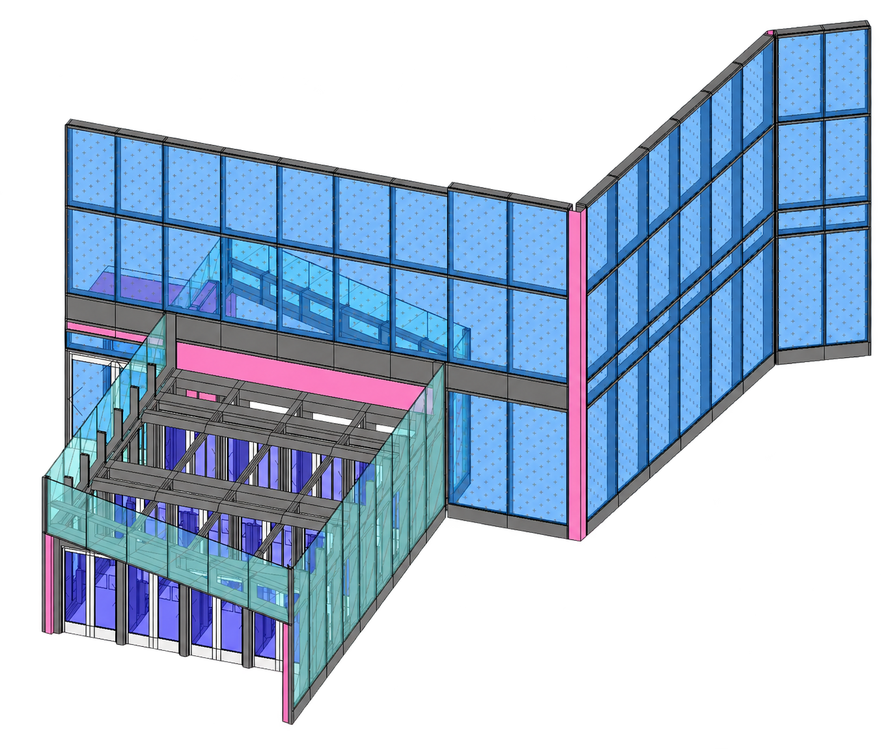
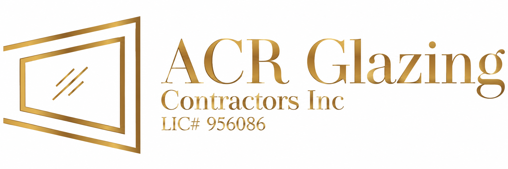

BIM Coordination·3D Modeling·Automation·Drafting
and VDC
projects
automation tools
- Focus
- BIM + Preconstruction
- Systems
- Glazing + Facades
- Approach
- Clear + Buildable
About


Hello! I’m James Watts, a BIM and preconstruction professional specializing in glazing and facade systems. My work sits between design, construction, and technology: I develop project-specific 3D models, coordinate changing design information, produce shop and proposal graphics, and create dependable workflows that support estimating, preconstruction, coordination, fabrication, field installation, and operations. With a background in industrial design and English literature, I bring equal attention to how information functions and how it is communicated—translating complicated facade conditions into clear models, diagrams, schedules, and presentations.
Experience
Employment
CS Erectors
BIM Lead
- Introduced project-specific 3D modeling workflows for bids and carried those models through preconstruction, coordination, shop drawings, field planning, and quantity takeoffs.
- Produced company-wide technical and graphical content, including logistics plans, proposal presentations, waterproofing standards, and completed-project photography.
- Developed more than 75 Dynamo, AutoLISP, and VBA tools to improve Revit, AutoCAD, Excel, scheduling, documentation, and takeoff workflows.
Walters & Wolf
Virtual Design Modeler
- Created accurate Revit models used to quantify labor and material for glass and metal panel facade estimates.
- Managed modeling scope, completed drawing packages, and coordinated design and engineering changes across active pursuits.
- Built a reusable library of adaptive generic models and modernized bid forms and sales presentation templates.
Arup
BIM Intern
- Contributed to drawing production for the Texas High-Speed Rail project.
- Developed documentation to establish standardized drafting processes.
- Created schematic diagrams and report graphics for project reviews.
Walters & Wolf
Drafting Intern
- Built a Revit model for Stanford Medical Center to support project estimating.
- Collaborated with company experts to develop an efficient workflow for converting 2D drawings into reusable 3D generic-model components.
San FranciscoState University
Primary software
Portfolio


Freelance
3D models / Custom automation
Have a project
in mind?
I create custom façade models, drawing packages, and Dynamo or pyRevit tools for your team. Explore my services, past freelance work, and project pricing.


Books
2026 Shelf
35 shelved
01 / 35
A line to remember
The next chapter
Pull up a book.
Choose any spine below to see its cover.
Drag to rearrange. Your arrangement is saved in this browser. Use Alt and the left or right arrow key to move a focused book. Swipe left or right to browse the shelf.
Artwork
Paintings, 2021–2022
14 works Select a work to enlarge
Heartache Is Not For Us
Acrylic on canvas
Yearning For Repairs
Acrylic on canvas
Wrist Pain, Weariness and Lackluster
Acrylic on canvas
STOP!
Acrylic on canvas
Red Flag
Acrylic on canvas
Show Them Off
Acrylic on canvas
Helps To Run
Acrylic on canvas
Goodnight!!!?
Acrylic on canvas
So. Many. Choices.
Acrylic on canvas
Wrapped Up, Tied Up
Acrylic on canvas
Not So Bad
Acrylic on canvas / Two panels
Hurts One to Know One
Acrylic on canvas
What Else Is Going On Around Here?
Acrylic on canvas
Love Wrestlin’
Acrylic on canvas
Contact
Let’s build clearer project workflows.
For BIM, preconstruction, facade coordination, technical documentation, or automation opportunities, reach out directly.